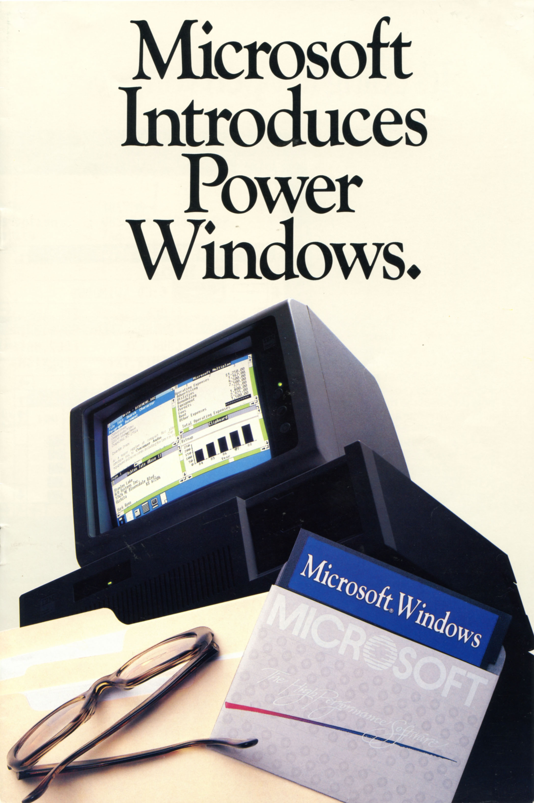

By Original work: Microsoft - Original work: Moreau, Sam (17 February 2012). Redesigning the Windows Logo. Blogging Windows. Microsoft. Retrieved on 15 February 2013.This work: http://www.brandsoftheworld.com/, Public Domain, https://commons.wikimedia.org/w/index.php?curid=21411729

By Alexvar10 - Own work, CC BY-SA 4.0, https://commons.wikimedia.org/w/index.php?curid=126104978
Description
Back then, Microsoft Windows was not how we know it today, as an operating system. In fact back then it was a MSDOS graphical user interface overlay. Windows 1.0 required a MSDOS version between of 2.0-3.0. It included: MS-DOS Executive (File Manager), Wordpad (Word Processor), Cardfile (Contacts), Terminal (MSDOS Terminal Emulator), Calculator , Control Panel (Settings), Clock , Calendar , Paintbrush (Nowdays: Paint or MSPaint) and Reversi. It was criticized for the tiling windows manager, lack of compatibility with other applications and its slowness. But Microsoft didn’t give up and released afterwards “Microsoft Windows 2.0”. Even with the low succes of Windows at first, Windows is the most used PC operating system, executed on 71.48% of devices.
System Requirements
| Component | Minimum | Recommended |
|---|---|---|
| CPU | Intel 8086 | Intel 8088 |
| RAM | 256 KB | 512 KB |
| Storage | Two double-sided floppy disks | Hard Drive |
| Graphics | CGA adapter, HGC adapter | EGA adapter |
| OS | MSDOS 2.0 | MSDOS 3.0 |
Brochure
By Microsoft. - Brochure scanned by Swtpc6800, Michael Holley, in November 2010., Public Domain, https://commons.wikimedia.org/w/index.php?curid=12100634
Trivia
- Because of the latest season of the Netflix show "Stranger Things" is happening in 1985, Microsoft created an app that simulates Windows 1.0
- As a joke, one of the Microsoft employees commented "That they wanted to name Windows 10, Windows One (due to the fact that most of the Microsoft Products had a prefix/suffix of One; E.G. OneNote, OneDrive, Xbox One) but they coudn't because of Windows 1.0"